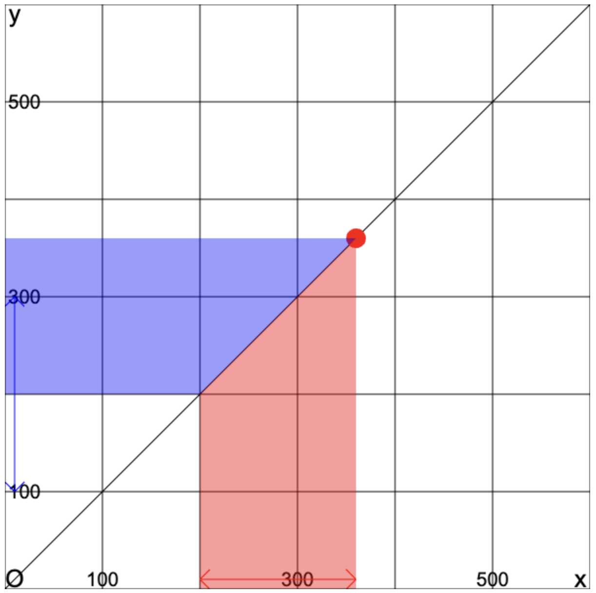
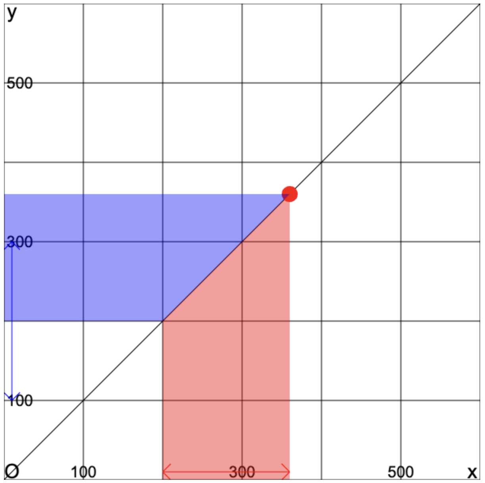

変域について学ぼう
変域とは
関数は、xの値を決めるとyの値もただ一つに決まります。 つまり、xの動く範囲（変域）が決まると、yの動く範囲（変域）も決まります。 (逆に、1次関数ではyの変域が決まるとxの変域も決まります)
練習問題
1次関数とxの変域からyの変域を計算して、グラフで表してみましょう。
自分で入力した変域は画面左側に青い矢印で描かれます。 青い矢印と青い範囲がぴったり重なれば正解です。

関数は、xの値を決めるとyの値もただ一つに決まります。 つまり、xの動く範囲（変域）が決まると、yの動く範囲（変域）も決まります。 (逆に、1次関数ではyの変域が決まるとxの変域も決まります)
1次関数とxの変域からyの変域を計算して、グラフで表してみましょう。
自分で入力した変域は画面左側に青い矢印で描かれます。 青い矢印と青い範囲がぴったり重なれば正解です。
